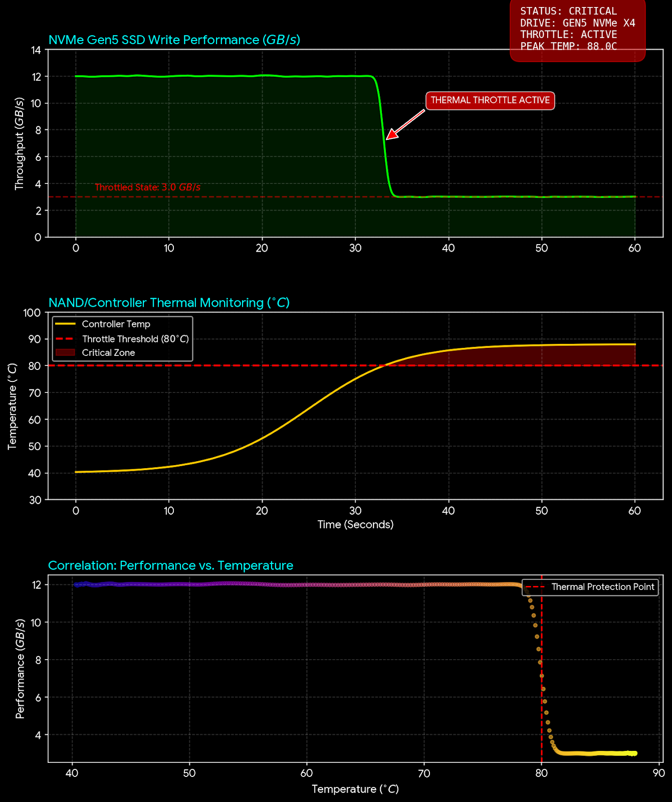

The dawn of PCIe Gen5 storage has brought transfer speeds exceeding 14,000 MB/s to consumer desktops. However, this blistering performance comes at a steep thermodynamic cost. Modern controllers like the Phison E26 run notoriously hot, often exceeding 80°C under sustained write loads. When this thermal ceiling is hit, the drive engages a safety protocol known as "Thermal Throttling," slashing performance by up to 60% to prevent physical damage.
1. The Symptoms of Stealth Throttling
Most users believe their drive is fine because Windows boots quickly. However, thermal throttling in Gen5 drives is often insidious. It doesn't always manifest as a system crash. Instead, it appears as:
- Inconsistent Transfer Rates: A file transfer starts at 10 GB/s but plummets to 800 MB/s after 20 seconds.
- Micro-Stutter in Games: As DirectStorage assets are streamed, brief thermal spikes cause the controller to hang, resulting in frame drops.
- OS Sluggishness: Random pauses when opening Explorer windows or saving large projects.
2. Diagnosing with GearVerify
To detect if your heatsink solution is adequate, you need to stress the controller, not just the NAND flash. Standard benchmarks often pause between read/write cycles, allowing the drive to cool down. A true stress test requires sustained, relentless I/O.
3. The Thermal Cliff
Gen5 drives operate on a "Thermal Cliff." Performance remains consistent until the composite temperature (usually Sensor 1 or 2) hits the critical threshold (often 75°C - 85°C depending on firmware). At this precise moment, the firmware cuts voltage to the core.
Analyzing the graph below, you can see the distinct "sawtooth" pattern of a throttling drive. It heats up, throttles, cools down, boosts, and overheats again in a rapid cycle.
4. Solutions for High-Velocity Storage
If you confirm throttling, the solution is almost always physical, not software-based:
- Active Cooling: Passive heatsinks are no longer sufficient for Gen5. M.2 fans are becoming a requirement.
- Thermal Pad Contact: Ensure the controller (the silver chip) makes full contact. A 0.5mm gap is enough to cause failure.
- Airflow Paths: A vertical GPU mount might be blocking airflow to your primary M.2 slot.
Don't let thermal physics limit your bandwidth. Validate your cooling solution today using our storage diagnostics suites.